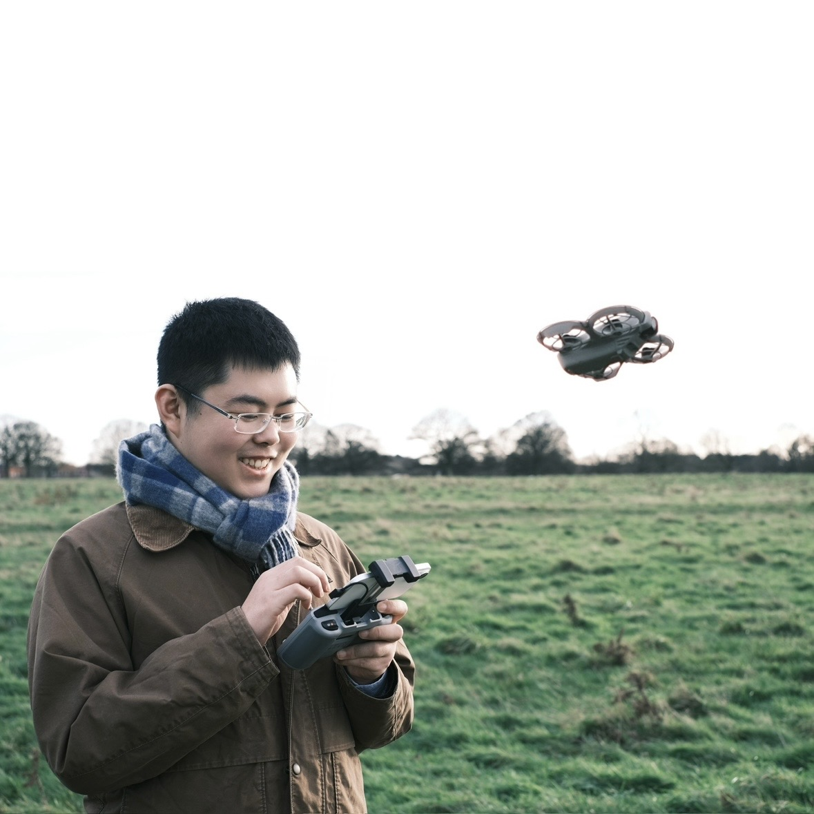
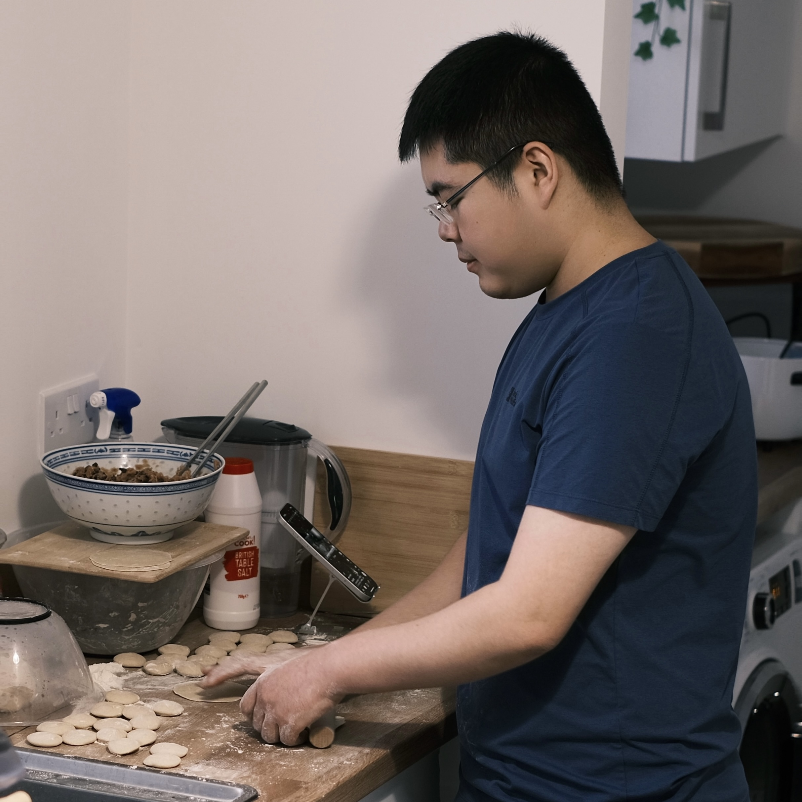

Photography
A way to practice composition, patience, and observation.
A way to practice composition, patience, and observation.

Aerial views help me understand space, movement, and context.

A hands-on practice in timing, precision, and care.
A growing map of places that shaped how I study markets, cultures, cities, food, and daily life.